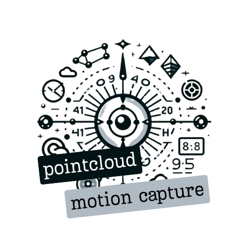

motion_capture.launch.py
Go to the documentation of this file.
generate_launch_description()
Definition motion_capture.launch.py:8
Generated by
|  |
PointCloud Motion Capture
Pointcloud Motion Capture is a ROS 2 package designed to process point clouds for capturing object movements. It detects objects using color filters and infers data about their position, velocity, and acceleration. This package has been tested under [ROS] Humble and Ubuntu 22.04
|